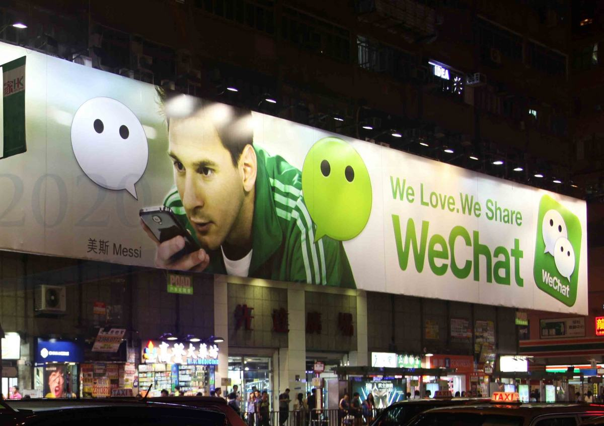
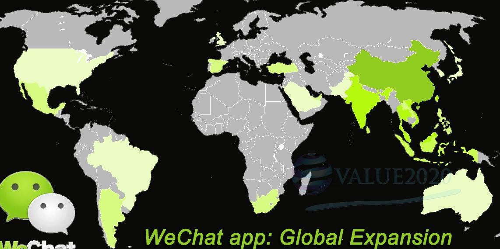

微信(WeChat)自2011年1月21日推出以来，短短5年时间成为超过八亿人使用的手机应用。微信充分重视用户的体验度，围绕用户设置功能和优化操作，仅耗费少量网络流量就可以跨通信运营商、跨操作系统平台发送语音短信、视频、图片和文字。独特的“熟人+陌生人+圈子”的模式，符合中华文化的“抢红包”功能体现出持续创新的能力；“公众号+微信支付”为传统行业提供闭环式移动互联网商业解决方案。微信已经成为人们的一个生活方式。
跨通信运营商、跨地区漫游在中国大陆一直是以“价格不菲”著称。微信抓住智能手机普及和移动网络数据通信能力升级的时机，提供免费(仅耗费少量网络流量)的方式跨通信运营商、跨操作系统平台发送语音短信、视频、图片和文字，促进了人与人之间的沟通，倒逼通信运营商逐渐取消“跨运营商短信费”、“通话漫游费”等费用。
微信打造符合中国人社交特点的“熟人+陌生人+圈子”的模式。可以在熟人间“群聊”，分享“朋友圈”，也可以通过“附近的人”、“摇一摇”等联系爱好相同的陌生人。“微信红包”更是主打中国传统民俗，2015年除夕当日微信红包收发总量达10.1亿次。
微信的目标是形成完整的生态系统，打造新的生活方式，逐渐从社交软件转变成平台，订阅号、服务号等公众账号，以及微商等商业模式已经从线上渗透进线下，通过为合作伙伴提供“连接一切”的能力，再通过微信支付打造出一个完整的商业闭环，助推企业用户商业模式的移动互联网化转型。微信正在形成一个全新的“智慧型”生活方式。
腾讯2016年中期业绩显示:微信每月活跃用户升至超过8亿户，同比上升34%，其中微信企业账户突破2000万户。
